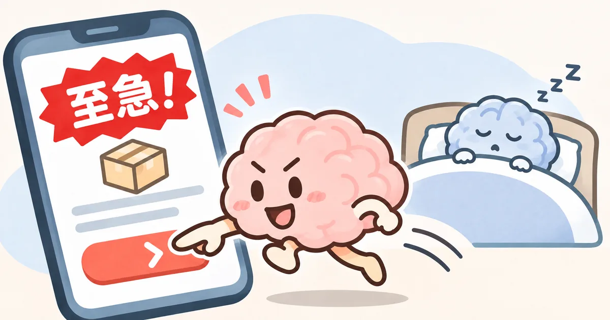
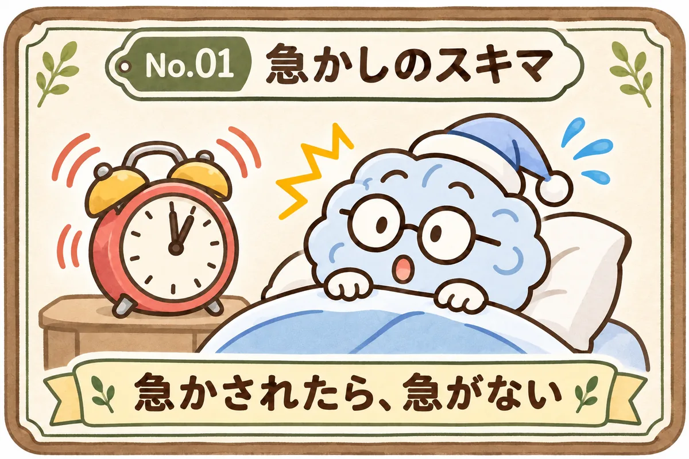

脳のスキマ図鑑 No.01
「至急」の2文字で、あなたの脳は「直感モード」に切り替わる
急かしのスキマ（二重過程理論）

No.01人の脳には「速い思考」と「遅い思考」の2つのモードがあります。詐欺メールがやたらと急かしてくるのは、遅いほうが目を覚ます前にクリックさせたいからです。
まずは、ちょっとしたクイズ
考え込まず、パッと答えてみてください。
バットとボール、あわせて 1,100円。バットはボールより 1,000円高い。ボールはいくら？
「100円」が頭に浮かびましたよね。でも、ボールが100円ならバットは1,100円で、あわせて 1,200円になってしまいます。正解は 50円 です。
これは心理学者のシェーン・フレデリックが作った問題を、日本円に直したものです。アメリカの一流大学の学生でも、半数を超える人が「直感の答え」を書いたと報告されています。頭が悪いから間違えるのではありません。脳が「考える必要なし」と判断して、答えを先に出してしまうんです。

脳の中の「直感くん」と「慎重さん」
心理学では、人の考え方を2つのモードに分けて説明することがあります。「二重過程理論」と呼ばれる考え方で、ノーベル経済学賞を受けた心理学者ダニエル・カーネマンの本『ファスト＆スロー』で広く知られました。
| 直感くん（システム1） | 慎重さん（システム2） | |
|---|---|---|
| 速さ | 一瞬で答えを出す | 時間がかかる |
| 疲れ | ほとんど疲れない | すぐ疲れる |
| 得意なこと | いつもの仕事、顔や声の見分け | 計算、比べること、「ちょっと待てよ」 |
| 弱点 | もっともらしいものに飛びつく | 呼ばれないと起きてこない |
ふだんの生活は、ほとんど直感くんが回しています。毎回慎重さんを起こしていたら、朝の身支度だけで日が暮れます。それ自体は、とてもよくできた仕組みです。
問題は、「慎重さんが出番の場面」でも、直感くんが答えてしまうことです。

※2人は考え方のモードを表すたとえで、脳の特定の場所のことではありません。カーネマン自身も、システム1とシステム2を説明のための「登場人物」として紹介しています。
詐欺メールは「慎重さんが起きる前」を狙う
こんな文面、見たことはありませんか？（どれも作り例です）
- 「【重要】お客様のアカウントが停止されました。24時間以内にご確認ください」
- 「お荷物のお届けに上がりましたが、宛先不明です。本日中にご連絡がない場合、返送します」
- 「ご利用料金のお支払いが確認できません。至急お手続きください」
共通しているのは、「いますぐ」と「放っておくと困ることが起きる」 のセットです。
時間に追われ、しかも不安になると、人はじっくり考える代わりに、目の前の分かりやすい出口に飛びつきます。その出口として用意されているのが、「こちらから手続き」のリンクです。
さらに、メールやSMSを見るのは、たいてい「ながら」の時間です。電車の中、仕事の合間、寝る前。小さな画面で、片手で、半分別のことを考えながら。慎重さんにとっては、もう最初からアウェーの試合なんです。

慎重さんを起こすコツ：「急かされたら、急がない」
ここがこの回いちばんのポイントです。「急いで」と言われたことそのものを、慎重さんの目覚まし時計にしてしまいましょう。
- 「至急」「本日中」「停止」を見たら、手を止める合図にする。急かすことは、考えてほしくない人の得意技です
- メールやSMSのリンクからは入らない。確かめるときは、いつも使っている公式アプリか、ブックマークから
- 「本物だったら、あとで公式から見ても同じことが書いてあるはず」と考える。本当に大事な知らせなら、公式アプリや公式サイトでも確かめられます
まるで「急がば回れ」の現代版ですね。飛びつく前に、3秒だけ深呼吸。その3秒で、慎重さんはちゃんと起きてきます。
